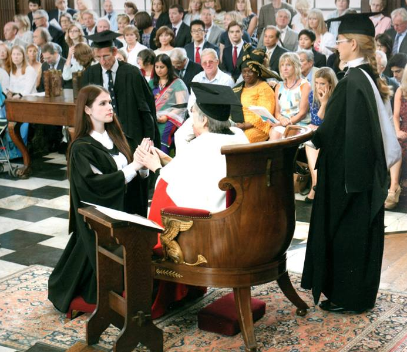
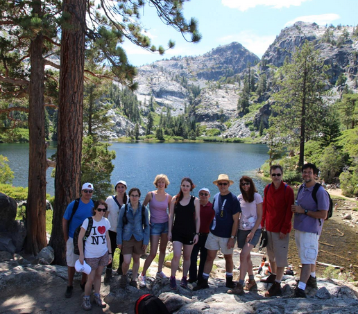
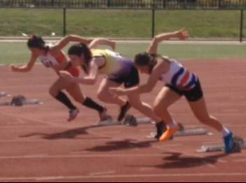

| Home | • | Research | • | CV | • | Talks | • | Travel | • | About |
|
I completed my undergraduate degree at Monash University, majoring in physics and mathematics. In my final undergraduate year, I designed an interface for dark matter software packages as part of my bachelor thesis with A/Prof Csaba Balazs. This involved determining a generic way to perform theoretical dark matter calculations and connect them to experimental observables. | University of Cambridge graduation in Senate House, July 2013 |
In 2013 I joined the theoretical particle physics group at the University of Melbourne (and CoEPP), with A/Prof Nicole Bell as my advisor. My PhD research focused on dark matter phenomenology, in collider and astrophysical contexts. As part of my PhD I also enjoyed working as a visiting researcher in the United States, at Vanderbilt University with Prof. Tom Weiler in 2015, and at the Ohio State University (CCAPP) with Prof. John Beacom in 2016. Being able to travel and exchange ideas with people around the world is one of my favorite things about being a physicist.
| SUSY conference hike group at Lake Tahoe CA, August 2015 |
|
|
| Competing in the 100m sprint (middle) at AV Shield, November 2016 |